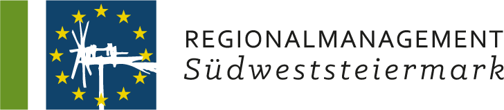
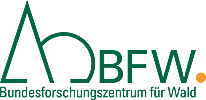
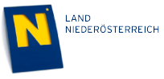

Menü
Auf dieser Seite präsentieren wir ausgewähte Projekte, welche die w3geo GmbH als Hauptauftragnehmer oder Teile unseres Teams als eigenständige Unternehmen umgesetzt haben.
Hinweis: Da einige unserer Projekte (zumindest Teile davon) nicht für den öffentlichen Zugang konzipiert sind, haben wir bestimmte Bereiche der Screenshots aus Datenschutzgründen teilweise unkenntlich machen müssen. Bitte haben Sie dafür Verständnis!
| Beschreibung: | Der AG wünschte eine Webplattform inklusive einer Kartenapplikation zur Präsentation einer größeren Anzahl von Kartendaten (später auch statistische Daten) gegenüber einem fachlich interessierten Publikum. Wichtig: Der AG sollte selbst den Bestand an Karten erweitern können, ohne Einbindung des Auftragnehmers. Bevorzugt sollte der Bestand aus Vektor-Karten bestehen, aber auch Rasterkarten. Da es sich um eine größere Anzahl von Karten handelt (30+), musste die Verwaltung komfortabel sein. Die Karten sollten über Deep-Links in IFrames auch auf anderen Websites einbettbar sein. Komfort-Features wie Import / Export (GeoJSON), Bild-Export (PNG/PDF [inkl. Legende]) und weitere Toolboxfunktionen waren erwünscht. Das Frontend soll auf Responsivität optimiert werden und Anforderungen der Barrierefreiheit (WCAG 2.1) erfüllen. |
| Schwerpunkte: |
|
| Besonderheiten: |
Die Besonderheit bei diesem Projekt ist, dass ALLE Karten im Portal komplett vom Auftraggeber erstellt und freigeschalten werden können, inklusive Layer, Feature-PopUps usw. Dazu sollte es zu jeder Karte bzw. auch für den allgemeinen Informationsteil ein möglichst einfaches CMS geben, dass automatisch responsiv ist, da ein hoher mobiler Nutzungsanteil erwartet wurde. Vektorkarten werden durch Hochladen eines GeoJSONs ins Portal automatisch in Vektor-Tiles umgewandelt und auf einem Server bereitgestellt. Andere Kartentypen (Rasterdaten) werden manuell mittels eines in einem Workshop erläuterten und gut dokumentierten Prozesses erzeugt und auf den Server transferiert. Mittels Mapbox Style Files können nun ein oder mehrere dieser Tile-Layer zu einer Karte zusammengeführt werden, im Style File werden alle notwendigen Angaben gemacht. Solche Style Files können mit externen Tools oder auch manuell erzeugt werden, auch das wird in einem Workshop erarbeitet. |
| Zeitraum: | 2023 – 2025 (laufende Erweiterung, Betreuung) |
| Link: | www.waldatlas.at/ |
| Kunde: | Bundesministerium für Land- und Forstwirtschaft, Klima- und Umweltschutz, Regionen und Wasserwirtschaft (BML) |
| Beschreibung: | Aufgabe war es, eine Waldökologische Serviceplattform aufzubauen, die sich einerseits mit waldökologischem Wissensmanagement („Waldökologischen Fragestellungen“) und Serviceleistungen („Waldökologischen Planerstellung für Forstbetriebe“) beschäftigt und dadurch eine Annäherung der beiden Sektoren Forstwirtschaft und Naturschutz anstrebt, als auch wissenschaftlich belegte und biodiversitätsrelevante Grundlagenarbeit für die Einbindung von waldökologischen Aspekten im Rahmen der nachhaltigen Waldbewirtschaftung schafft. Die Serviceplattform sollte Bereiche anbieten unter andere für einen Downloadbereich für Pläne, ein Knowledge Hub zu aktuellen Projekten und Themen, sowie eine interaktive Karte mit regionalem Einstieg zu Projekten, Waldbauliche Maßnahmen und Förderungen auf Bundeslandebene. Ziel war es, den Nutzer:innen einen Überblick über die bereits umgesetzten Projekte und möglichen Förderungen in ihrer Region zu ermöglichen. Ein weiterer wichtiger Punkt war die Bereitstellung von Planungsformularen für Waldbesitzer:innen, in denen diese Ihren Wald spezifizieren und damit einen Überblick über mögliche Maßnahmen / Förderungen erhalten können. |
| Schwerpunkte: |
|
| Zeitraum: | 2024 - 2025 |
| Link: | www.waldoekologie-service.at |
| Kunde: | Bundesforschungszentrum für Wald (BFW) |
| Beschreibung: |
Der Auftraggeber benötigte eine Webplattform die den Ausbau und das Potential von Photovoltaikanlagen (anhand ihrer Lagegunst) sowie die Einspeisekapazitäten der Strominfrastruktur und damit auch gewünschte Lagen (von Seiten der vorhandenen Infrastruktur) ausweisen sollte. Die Plattform soll in einen öffentlichen und einen nicht-öffentlichen (Verwaltung) Bereich unterteilt werden. Funktion des öffentlichen Bereichs:
Funktionen des nicht-öffentlichen Bereichs:
|
| Schwerpunkte: |
|
| Besonderheiten: |
Je nach der durch den Login definierten Rolle stellt das Portal unterschiedliche Layer dar bzw. erlaubt andere Operationen, z.B. die Freigabe von eingegeben Daten usw. |
| Zeitraum: | 204 |
| Link: | pv-sws.eu-regionalmanagement.at |
| Kunde: | Regionalmanagement Südweststeiermark |
|  |
| Beschreibung: |
Wie alle Länder der EU ist auch Österreich zu einer Waldinventur verpflichtet. Damit beauftragt ist das Bundesforschungs- und Ausbildungszentrum für Wald, Naturgefahren und Landschaft (BFW). Die dazugehörigen Daten werden seit 2000 in einem einheitlichen Schema erhoben und in einer BFW-internen Datenbank gespeichert und verarbeitet. Ein zu schaffendes Portal sollte diese Daten in unterschiedlichen Sichten zugänglich machen, zum einen über Choroplethenkarten, zum anderen als Datendownloads in Tabellenform. Zusätzlich sollten die vom BFW aus den Daten laufend aktualisierten Wald- und Baumartenkarte als Rasterkarte darstellbar sein. Design-Vorgabe war „Desktop First“ - dennoch musste aber eine einwandfreie Benutzbarkeit auch auf mobilen Endgeräten gegeben sein (responsive Design) Aktualisierungen sollte der Auftraggeber zukünftig selbst durchführen können, das BFW hatte die Vorgabe, die Website selbst zu hosten, ohne aber dadurch großen Aufwand für Sicherheitsfeatures zu haben. |
| Schwerpunkte: |
|
| Besonderheiten: |
|
| Zeitraum: | 2021 - 2023 (Betreuung fortlaufend) |
| Link: | www.waldinventur.at |
| Kunde: | Bundesforschungszentrum für Wald (BFW) |
| Beschreibung: | Für Agrarmarkt Austria (AMA) sind wir seit 2019 in den Bereichen Consulting und Unterstützung bei der Softwareentwicklung für moderne kartenbasierte Web-Applikationen tätig. Diese sollen auf verschiedenen Endgeräten (PCs, Tablets, Smartphones) komfortabel bedienbar sein, und räumliche Sachverhalte auf einfache Art vermitteln. |
| Schwerpunkte: |
|
| Zeitraum: | 2019 bis heute |
| Link: | flaechenauswertung.services.ama.at |
| Kunde: | AMA |
| Beschreibung: | Für die Wirtschaftsagentur des Landes Niederösterreich haben wir als Teil der w3geo GmbH das Portal www.standortkompass.at für die Suche und das Anbieten von Gewerbeimmobilien umgesetzt. Das vollresponsive Frontend wird ergänzt durch umfangreiche Administrationswerkzeuge, welche sowohl Kunden wie auch Mitarbeitern von ecoplus die Verwaltung der Objekte erlaubt. Für dieses Projekt durften wir 2017 gemeinsam mit dem Kunden den Preis für den 2. Platz in der Sparte "IT" beim Constantinus Award entgegennehmen. Ein Relaunch 2021 stellte das gesamte Portal auf eine komplett neue technische Basis und führte die Verwaltung eigener Immobilien durch Benutzer ein. Dafür wurde auch das Backend für die Portalbetreuer sukzessive erweitert und durch wichtige Funktionalitäten erweitert. |
| Schwerpunkte: |
|
| Besonderheiten: |
Eine Herausforderung war die Kopplung an das Intranet CRM, welche über gesicherte Schnittstellen umgesetzt wurde. Dies wurde in Form spezieller Synchronisations-Mechanismen umgesetzt. Mit dem letzten Update-Zyklus wurde begonnen, dem Backend GIS-Funktionalitäten hinzuzufügen, was den Betreuern erspart, zwischen dem Portal und Drittanbieter-GIS-Software zu wechseln und so den Workflow beim Erstellen individueller Angebote enorm zu beschleunigen. |
| Zeitraum: | 2016 bis heute |
| Link: | www.standortkompass.at |
| Kunde: | ecoplus GmbH |
| Beschreibung: | Für die Firma ISTmobil GmbH entwickeln und betreuen wir seit 2014 ein automatisiertes Fahrzeugs-Dispositionssystem. Die webbasierte Software ist eine komplexe Verbindung aus Verwaltungs-Backend, Dispositions-Frontend für das Callcenter, Tablet-Frontend für die Fahrer und einer serverbasierenden Telefonanlage für das Callcenter. Aufgabe des Systems ist die Annahme von Fahrtaufträgen im Callcenter und die automatisiert berechnete Zuweisung an Fahrzeuge. Der Entwicklungsprozess ist ein laufender, vom Kunden kommt der Input aus der Praxis und unser gemeinsames Ziel ist die permanete Verbesserung des Systems. Ein wichtiger Aspekt war die Verwendung von Open Source Software und Daten, soweit irgend möglich, um die laufenden Kosten gering zu halten. Das System läuft im Dual-Server Betrieb, eine möglichst hohe Ausfallssicherheit zu gewährleisten. Hinweis: Die native Smartphone-App sowie die Web-App wird von der Firma Syon betreut und nutzt die API der ISTdis Software! |
| Schwerpunkte: |
|
| Besonderheiten: |
|
| Zeitraum: | 2014 bis heute |
| Link: | webapp.istmobil.at |
| Kunde: | ISTmobil GmbH |
| Beschreibung: | Für das Bundesamt für Wald haben wir in einer fachlich wie technisch sehr fruchtbaren Kooperation die Österreichische Bodenkarte neu gestaltet. Dabei wurde das alte, stark an ein WebGis angelehnte Produkt durch eine moderne, serverless funktionierende responsive Web-Applikation ersetzt. Vor allem die Aufbereitung der umfangreichen Daten zur eleganten und performativen Kartendarstellung brachte einige Herausforderungen mit sich, die wir aber zur Zufriedenheit des Kunden meistern konnten. Eine sehr gute Enduser-Akzeptanz brachte diesem Projekt große Aufmerksamkeit. Die Karte wird aktuell um Fachkarten erweitert. |
| Schwerpunkte: |
|
| Besonderheiten: |
|
| Zeitraum: | 2018 bis heute |
| Link: | www.bodenkarte.at |
| Kunde: | BFW  |
| Beschreibung: |
Für die GIP v2 (Graphen-Integrations-Plattform) sollte zumindest als Denkansatz die Softwarearchitektur von der Datenbank über die Schnittstellen bis zu den Applikationen radikal neu gedacht werden. Die Idee war die Schaffung einer mächtigen Middleware und in Folge einer Reihe rein webbasierter Clients, welcher modular aufgebaut wären und sich daher für die Entwicklung von Einzelkomponenten (z.B. Layer-Loader, Geometrie- und Formulareditoren, Abfragewerkzeuge) durch verschiedene Auftragnehmer/Entwickler eignen. Auf Basis dieser erstellten Einzelkomponenten können dann anwendungsbezogene Clients entwickelt werden, um eine einheitliche UX/UI-Erfahrung mit sämtlichen GIP-Anwendungen zu ermöglichen. Es gab allerdings erhebliche Zweifel unter den Stakeholdern und (sehr zahlreichen) Anwendern, ob dies technisch überhaupt machbar sei. Unsere Aufgabe war es, eine Client- / Server-Architektur für derartige Web-Tools zu entwickeln und auf Basis dieser Architektur (Proof of Concept) einige Basiskomponenten (Kartenansicht, Messen, Snapping, Einbinden von Kachel- und Vektor-Layern) zu entwickeln. In einer Reihe von Workshops wurde zunächst im Kreis der technisch versierten Entscheidungsträger eine moderne Anwendungs-Architektur auf Basis webbasierender Dashboards und Micro-Apps erarbeitet. Diese wurde dann prototypisch für einige relevante Use-Cases technisch beschrieben und als Wireframe-Skizzen entworfen. Für bestimmte Details wurden konkrete Beispiel-Apps implementiert. In Folge galt es, die Stakeholder der Bundesländer (primär Nutzer) von diesem Konzept zu überzeugen. Zudem sollte dem Auftraggeber eine lastenhefttaugliche Beschreibung der Software-Architektur auf Basis von Komponenten und Clients zur Verfügung gestellt werden. Zusätzlich wurde im Rahmen einer bezahlten Diplomarbeit von einem Studenten mit unserer Unterstützung ein konkreter Use-Case nutzungsfertig ausprogrammiert und präsentiert. |
| Schwerpunkte: |
|
| Besonderheiten: |
Konkrete Umsetzung eines prototypischen Workflows (“Kreisverkehr Tool”) durch einen von uns gecoachten Studenten der Geoinformatik im Rahmen einer bezahlten Diplomarbeit. |
| Zeitraum: | 2018 - 2020 |
| Kunde: | ÖVDAT |
| Beschreibung: | eStraB – Elektronische Gemeindestraßenzustandserfassung und -bewertung. Für die Straßenbauabteilung (ST4) des Landes Niederösterreich wurde ein webbasiertes Applikations-Paket zur Erfassung und Bewertung des Straßenzustandes durch fußläufige Begehung erstellt. Mit einem Tablet sollen sämtliche relevante Informationen per Touch eingegeben werden, Fotos verortet sowie Anmerkungen eingegeben werden können. Dabei wird ein modularer Ansatz gewählt, d.h. die Kernfunktionalitäten sollen in jedem Fall nur einmal umgesetzt werden und kommen dann in verschiedenen Clients zur Anwendung. |
| Schwerpunkte: |
|
| Besonderheiten: |
|
| Zeitraum: | 2018 bis heute |
| Kunde: | Land Niederösterreich  |
| Beschreibung: | Neugestaltung des Webportals: Das Portal wurde als Single Page Web Applikation konzipiert, d.h. durch die Navigation findet kein Seitenwechsel im traditionellen Sinne statt, die Informationen werden durch Overlays, PopUps etc. verfügbar gemacht. Dadurch wird garantiert, dass sich kein Nutzer in der Seitenstruktur "verliert". |
| Schwerpunkte: |
|
| Besonderheiten: |
|
| Zeitraum: | 2018 bis 2019 |
| Link: | lower-austria-contemporary.at |
| Kunde: | Abteilung Kunst und Kultur – K1, Land Niederösterreich |
| Beschreibung: | Gleichsam als Ergänzung zur Expansion der ISTmobil Dispositionsplattform ist dieses Werkzeug zur Erfassung von Haltepunkten (oder allgemeinen "Points of Interesst" entstanden. Verschiedene Benutzer-Ebenen bieten eine unterschiedliche Palette an Zugriffsmöglichkeiten. Zusätzlich zu den Standard-Werkzeugen zum Anlegen von Punkten (mit Stammdaten) gibt es auch die Möglichkeit, vordefinierte Listen per Excel-Upload in des System zu bringen Die Kartenansicht kann zwischen 3 verschiedenen Modi umgeschalten werden und bietet die OSM, die Basemap und das Luftbild (OthoMap) als Basismaterial. Einsatzziel der Online-Applikation ist das verteilte Erfassung geografischer Daten durch Zugangserteilung an div. Stellen wie Gemeinden, Bezirke, Planungsbüros etc. |
| Schwerpunkte: |
|
| Besonderheiten: |
|
| Zeitraum: | 2016 - heute |
| Kunde: | ISTmobil GmbH |
| Beschreibung: | Der Kunde nutzte bereits Google Maps als Kartendienst und wollte diesen, nicht zuletzt aufgrund der zu erwartenden hohen Kosten, durch eine flexiblere und günstiger Lösung ersetzen. Schließlich wurde ein Kartenmodul auf Basis von OpenLayers entwickelt. Damit lassen sich Geodienste (Karten, Geocoding, Routing) wie Bing Maps, Here oder OpenStreetMap ohne zusätzlichen Aufwand nutzen können. Damit ist es dem Kunden möglich, zwischen Dienstanbietern zu wechseln, ohne hierfür Änderungen am Source Code vornehmen zu müssen. Weiters können georeferenzierte Daten auf Kundenseite erstellt, modifiziert, gespeichert und dargestellt werden, ohne dass diese auf den Server des Kartendienstes übertragen zu müssen. |
| Schwerpunkte: |
|
| Zeitraum: | 2016 |
| Kunde: | Klingbacher IT Consulting |
Wir bereiten diesen Bereich gerade für Sie auf. Besuchen Sie und in Kürze wieder, um mehr aufregende Projekte in Beschreibung und Bild begutachten zu können!